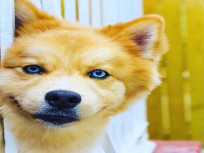
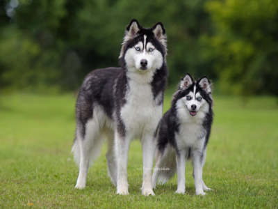

Zeus
Zeus is one of my dogs. He and his brother are from a litter of six, and coincidentally, they both
turned six this year. They are Pomskies, a mix of Husky and Pomeranian. Taking care of Pomskies can
be
challenging because they are very emotional and shed a lot. However, I would not trade them for
anything
in the world because they are like my kids and I love them.

Pomskies
Caring for a Pomsky requires patience and consistency. Pomskies present special challenges since
they
result from crossbreeding Pomeranians and Huskies. Daily physical activity is essential to burn off
their high energy and prevent boredom. Combining outdoor activities with mental stimulation through
training or puzzle toys helps them stay healthy and happy. Their thick double coat needs regular
brushing to prevent matting and minimize seasonal shedding. Pomskies also require social
interaction,
as they may develop separation anxiety if left alone for long periods. Early socialization and
proper
training improve their behavior, given their strong will and energetic nature. With proper
nutrition,
veterinary care, and lots of love, a Pomsky becomes a devoted and happy companion.